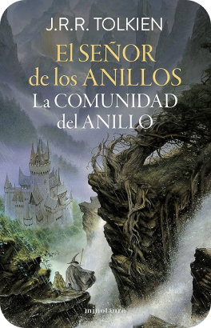
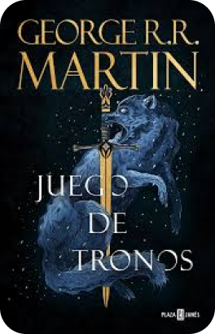
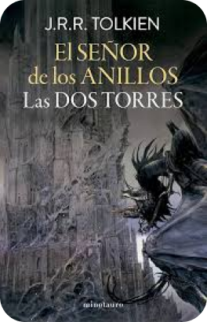
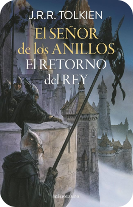
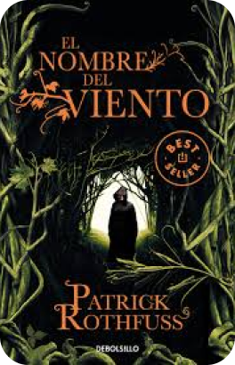

Biblioteca
El Señor de los Anillos: La Comunidad del Anillo

El primer volumen de la trilogía. Frodo recibe el Anillo Único y parte desde La Comarca junto a sus amigos hacia la oscura Mordor. La formación de la Comunidad y su travesía por Moria es pura fantasía épica.
El Imperio Final
Libro primero de Nacidos de la Bruma. Un grupo de forajidos planea derrocar a un dios inmortal en un mundo oscuro y cenicienta. Sanderson construye aquí su sistema de magia Alumancia, uno de los más ingeniosos de la fantasía moderna.
Juego de Tronos

El primer libro de Canción de Hielo y Fuego presenta las intrincadas políticas de los Stark, los Lannister y los Baratheon. Establece las reglas crueles de un mundo donde nadie está a salvo y las consecuencias son reales.
El Señor de los Anillos: Las Dos Torres

Tras la ruptura de la Comunidad, la historia se divide: Frodo y Sam avanzan solos guiados por el ambiguo Gollum, mientras Aragorn, Legolas y Gimli se ven arrastrados a las grandes batallas de Helm's Deep y Isengard.
Palabras Radiantes
Kaladin lidera la guardia real mientras lucha con su salud y su sentido del honor. Shallan viaja a las Llanuras Quebradas cargada con los secretos de su pasado. Tres caminos que convergen en un mundo sin héroes.
Asedio y Tormenta

Alina huye con Mal tras los eventos de Sombra y hueso, pero el Oscuro ha regresado con un poder aún más aterrador. Con la ayuda de un carismático corsario, Alina vuelve a Ravka para liderar la resistencia.
El Señor de los Anillos: El Retorno del Rey

El conflicto llega a su clímax con la batalla de los Campos de Pelennor, mientras Frodo y Sam se arrastran exhaustos por las tierras de Mordor hasta los fuegos del Monte del Destino. El fin de una era y el comienzo de otra.
La Voz de las Espadas
El inquisidor Glokta, cínico torturador; el capitán Jezal, vanidoso espadachín; y Logan Nuevededos, bárbaro de sanguinaria reputación. Tres caminos que convergen en un mundo sin héroes, donde la moral es una ilusión y la política es tan sucia como la guerra.
El Nombre del Viento

Kvothe, una leyenda viva convertida en tabernero anónimo, narra en primera persona su propia historia: de niño prodigio criado entre actores a huérfano en la calle, de estudiante brillante en la Universidad a mago temido en todo el mundo. Una prosa de una belleza excepcional.